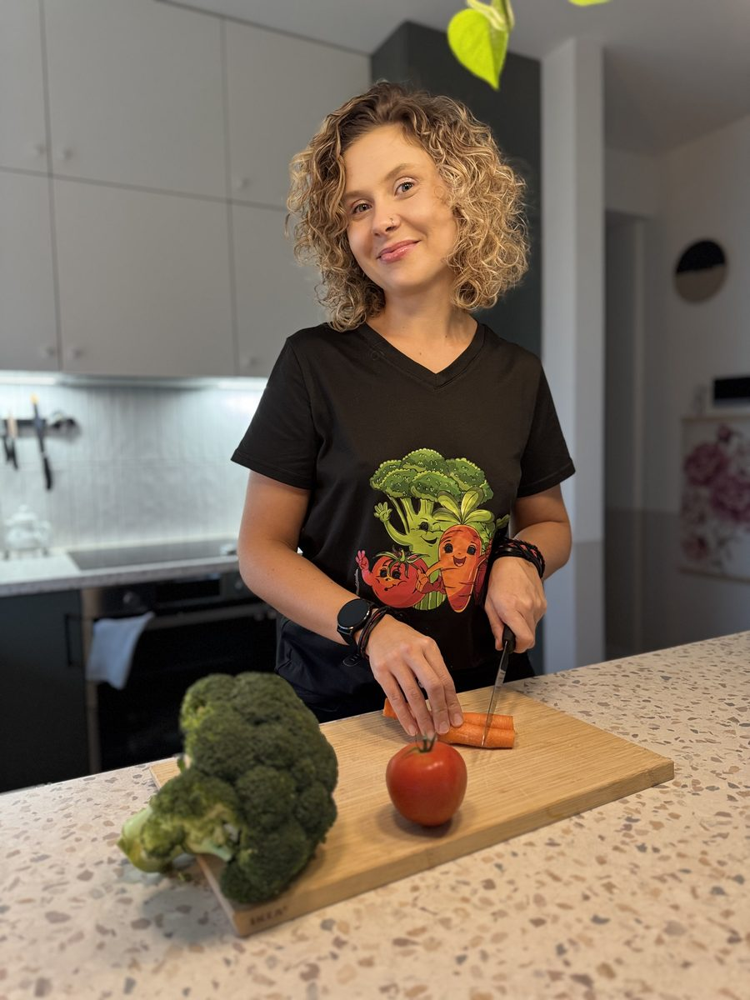
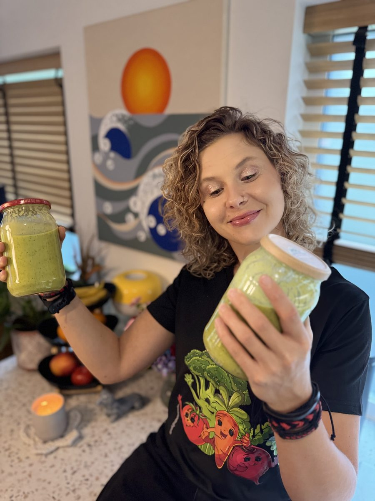
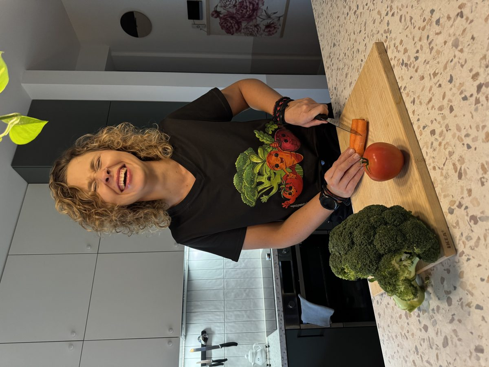
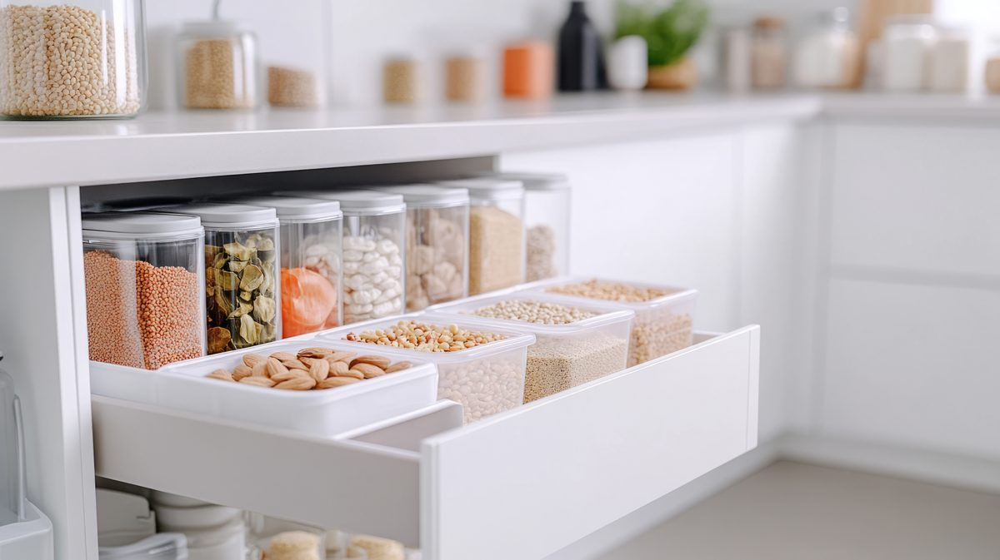

Misja na Talerzu
Indywidualne warsztaty kulinarne, które pokazują, że zdrowe gotowanie może być proste, szybkie i naprawdę smaczne.
Myślisz, że przyrządzanie zdrowych posiłków zajmuje za dużo czasu? Masz wrażenie, że warzywa są nudne albo niesmaczne? Po pracy wygrywa szybkie, byle jakie jedzenie? „Misja na talerzu" powstała właśnie dla takich osób jak Ty.
Podczas warsztatów 1:1 pokazuję, jak gotować mądrze, szybko i bez przekombinowania — tak, żeby zdrowe jedzenie zaczęło pasować do Twojego tempa życia. Dostajesz konkretne rozwiązania, proste patenty i pomysły na posiłki, które są jednocześnie szybkie, sycące i naprawdę pyszne.
Bez kulinarnej spiny, za to z poczuciem: „to jest prostsze, niż myślałem!"
👉 Umów swoją kulinarną misję
Dla kogo jest „Misja na Talerzu" i co z niej wyniesiesz?
„Misja na talerzu" jest dla Ciebie, jeśli chcesz jeść zdrowiej, ale nie wiesz, jak zacząć. Jeśli myślisz, że nie umiesz gotować, boisz się, że zdrowa kuchnia to duże wydatki i brak czasu, masz dość diet i codziennej frustracji w kuchni.
Podczas warsztatu nauczysz się gotować szybciej, prościej i taniej. Pokażę Ci, jak robić mądre zakupy, komponować sycące posiłki i ogarniać kuchnię tak, żeby działała na Twoją korzyść.
- gotujesz zdrowo, ale bez przekombinowania
- wydajesz mniej i nie marnujesz jedzenia
- masz menu dopasowane do siebie i gotowe dania do domu
- przełamujesz blokadę „nie umiem gotować"
- dostajesz konkretne narzędzia, tipy i dodatki do swojej kuchni
Efekt: więcej spokoju, mniej chaosu i poczucie, że w końcu ogarniasz swoją kuchnię, swoje zdrowie, swój portfel i tym samym swoją codzienność.
Gdzie i jak?
Informacje organizacyjne
- Oświęcim i okolice
- oferta dla mieszkańców Małopolski i Śląska
- spotkania indywidualne 1:1 (w przyszłości także małe grupy)
- czas trwania: ok. 3 godziny
- możliwość organizacji zakupów po mojej stronie
Jak wygląda warsztat?
Jak wygląda nasza kulinarna misja?
- Spotykamy się w mojej kuchni w Oświęcimiu lub — jeśli wolisz — w Twoim domu
- Podczas warsztatu gotujemy wspólnie krok po kroku, pracując na realnych, codziennych produktach
- Pokazuję Ci system, który pozwala samodzielnie komponować posiłki, zamiast polegać wyłącznie na gotowych przepisach
- Menu zawsze dopasowuję do Twoich potrzeb, budżetu i stylu życia, aby było możliwe do utrzymania na co dzień
- Jeśli chcesz, warsztat możemy rozszerzyć o element declutteringu kuchni, który porządkuje przestrzeń do gotowania
- Po spotkaniu wychodzisz z gotowymi daniami oraz jasnym planem działania do wdrożenia w domu

O mnie
💚 Kim jestem i dlaczego powstała „Misja na talerzu"?
Agata Olejniczak
Mam bzika na punkcie... jedzenia ;) Wiem, że posiłki mogą być jednocześnie zdrowe, sycące i naprawdę pyszne bez stania pół dnia przy garach i bez życia na liściu sałaty. Na co dzień jem świadomie, ale bez rygoru i bez podejścia „idealnie albo wcale". I dokładnie tego uczę na moich warsztatach.
„Misja na talerzu" powstała z życiowej obserwacji. Wiele zapracowanych osób chce jeść lepiej, ale gubi się między brakiem czasu, natłokiem porad, niewiedzą i zmęczeniem. Moją rolą jest to wszystko uprościć i pokazać rozwiązania, które naprawdę da się wdrażać codziennie.
Na co dzień pracuję również w marketingu. Prywatnie jestem miłośniczką natury, ruchu oraz psów. Bo dobre samopoczucie naprawdę zaczyna się od małych, codziennych wyborów.
👉 Dołącz do mojej kulinarnej misji
Decluttering kuchni
Bo dobra kuchnia to taka, która naprawdę ułatwia życie
Na życzenie kursantów mogę rozszerzyć warsztat o uporządkowanie Twojej kuchni. Wspólnie przyglądamy się wyposażeniu, produktom i organizacji przestrzeni, żeby gotowanie było prostsze i bardziej intuicyjne na co dzień.
Podczas takiego przeglądu pomogę Ci:
- ocenić sprzęty i narzędzia oraz zdecydować, co warto zostawić, a co tylko zabiera miejsce
- uporządkować szafki i strefy pracy tak, aby gotowanie było wygodniejsze
- przejrzeć produkty spożywcze pod kątem świeżości i przydatności
- stworzyć prosty system, który ułatwi codzienne funkcjonowanie w kuchni
Dobrze zorganizowana kuchnia naprawdę robi różnicę. Często wystarczy kilka trafnych zmian, żeby gotowanie zaczęło zajmować mniej czasu i sprawiać więcej przyjemności.
Kontakt
Chcesz wziąć udział w „Misji na talerzu"?
Napisz do mnie i umów swoją kulinarną misję. Każdy warsztat wyceniany jest indywidualnie.
Zrób pierwszy krok — reszta przyjdzie sama!